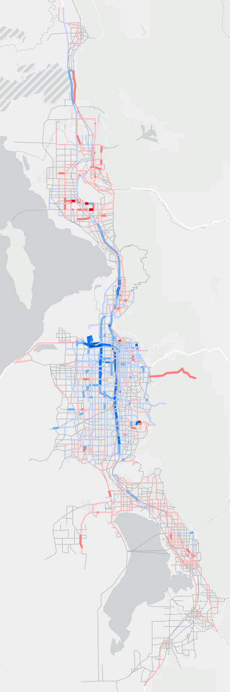
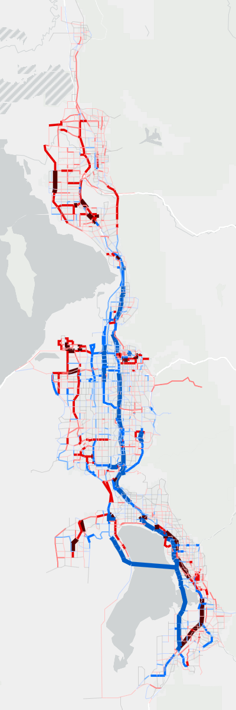

Version 9.0.0 - What’s New?
Model Results - Comparison with v8.3.2
This section compares the model results between v9.0.0 and v8.3.2 for roadway volumes and transit.
Road Volume Comparisons
The comparison between daily volumes at the segment level can be found in Figure 1 for 2019 and 2050. Decreases in volume in v9.0.0 compared to v8.3.2 are shown in blue, while increases are shown in red. Salt Lake and northern Davis counties display a drop in roadway volumes, most apparent on I-15. Weber, southern Davis, and Utah Counties show increases. Most of the changes are relatively minor, with the largest decreases occurring on the freeways in Salt Lake County. However, given the large daily volume for these roadways, the percent change is relatively low.



???WOULD BE BETTER TO REMOVE LINKS THAT HAVE ZERO LANES, NOTE MUTLIPLE UTAH LAKE CROSSING LINKS IN BOTH 2019 and 2050.
???MAY BE GOOD TO INCLUDE TRUCK VOLUME COMPARISON???
Transit Comparisons
Transit comparisons were done with ridership, trips mode share, and boardings mode share. Overall ridership increases significantly in v9.0.0, and Core Bus ridership takes a larger share of trips and boardings than in v8.3.2.
Transit Ridership
Transit ridership in v9.0.0 compared to v8.3.2 shows significant increase in 2032, 2042, and 2050. See Figure 2. The total ridership in 2050 for v9.0.0 is 332,000 daily trips compared to the v8.3.2 model that showed 258,000 daily trips, which represents a 29% increase. The increase is largely due to the improvements in commuter rail with increased frequency and speed. ???VERIFY!!???
???NEED TO GET RID OF DATE TIME STAMP AND OTHER ’CODE’S IN MODEL LEGEND “Transit” instead of “4: Transit”???
For Home-Based College (HBC) trips, the v9.0.0 model shows lower projections. See Figure 3. This is mostly due to many of the lower enrollment colleges being removed from the trips tables. The uptick in HBC trips in 2042 and 2050 in v9.0.0 follow similar increases the updated enrollment trends. ???ADD REFERENCE TO COLLEGES SECTION IN INPUTS???
Transit Boardings
Transit boardings for v9.0.0 are found in Figure 6 and for v8.3.2 are found in Figure 7. Boardings follow the same pattern as trips, but boardings are able to differentiate between modes better than trips that are categorized hierarchically.
???SAME COMMENTS FOR THESE TWO AS THE TWO ABOVE???
Commuter Rail Station Boardings
The comparison of base year (2019) station-level boardings for commuter-rail transit (CRT) is found in Figure 8. CRT boardings were found to be higher than observed for Davis County and lower than observed for Utah County. An adjustment of 5 additional minutes to in-vehicle-time for trips to/from Davis County and 5 fewer minute to in-vehicle-time for Utah County was made to attempt to bring the model more in-line with observations. ???VERIFY!!!???
Additional investigation was conducted into why Provo and Lehi were particularly low in the model. The findings did not turn up any obvious errors in the transit or model network. So, the conclusion is that further adjustments to CRT will be possible in the Mode Choice Update project that is currently being undertaken for the next release of the model.